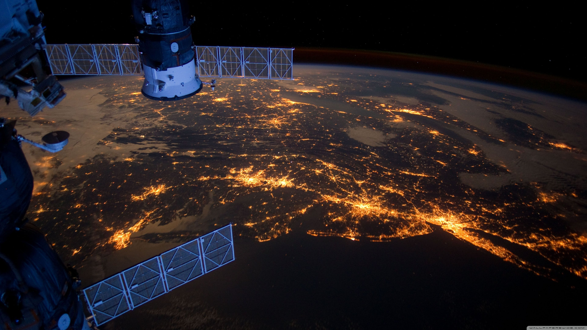

La NASA fournit gratuitement des données d’observation de la Terre via des plateformes comme NASA Earthdata
mor informationDes missions comme DART (Double Asteroid Redirection Test) visent à tester des moyens de défense contre les impacts potentiels.
mor informationLa NASA collabore avec des entreprises comme SpaceX, Blue Origin et Boeing pour développer des missions habitées et des technologies pour l’exploration spatiale (ex. programme Artemis pour retourner sur la Lune).
mor information
L’ingénieur allemand devenu le cerveau derrière le développement de la fusée Saturn V
mor information.jpg)
Washington, D.C., USA
+1 202-358-0001
public-inquiries@hq.nasa.gov